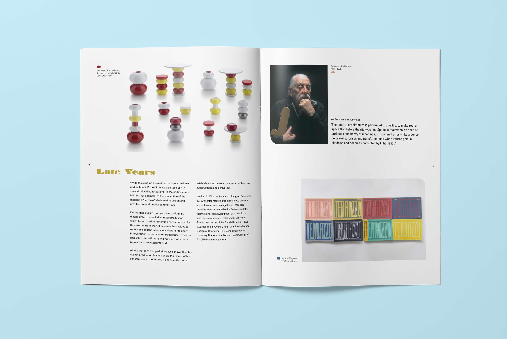
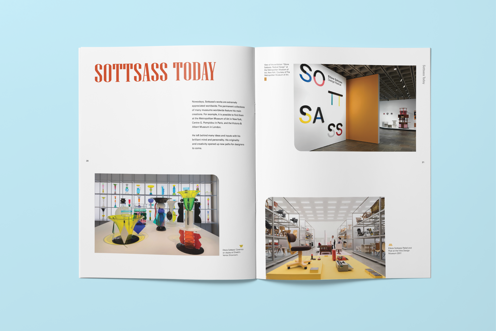
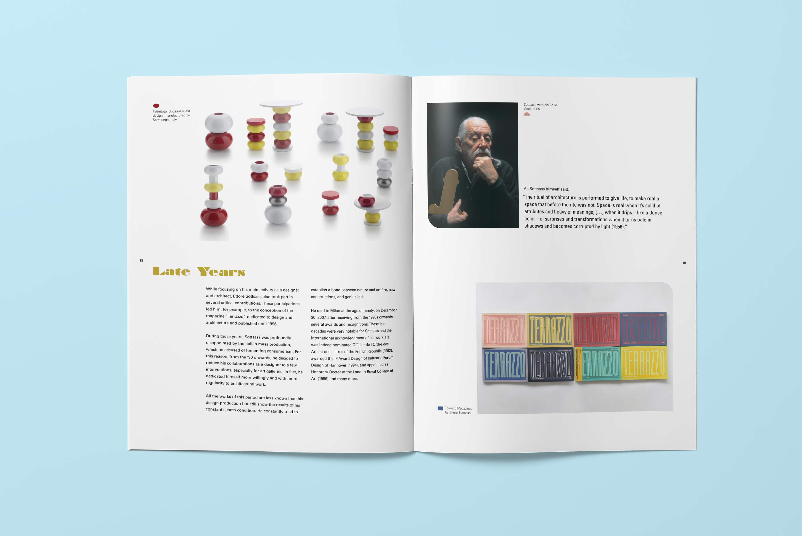
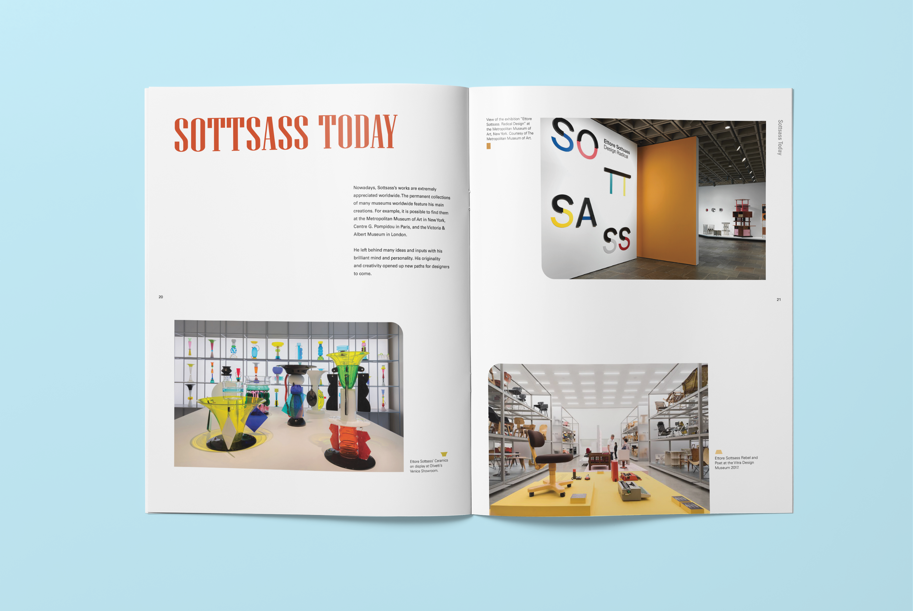

A book in honor of Hydie Cruz — the domestic worker who raised me, and my beloved friend.
Design Approach
This artist book explores the fading nature of memory and the enduring warmth of my friendship with Hydie. Although specific details may blur over time, the emotional resonance of our shared experiences remains present.
To express this, the book is primarily printed on tracing paper, allowing images and text to subtly layer and shift as the reader turns the pages. This transparency evokes the haziness and overlap of memory in the present. As the reader progresses, a brightly colored illustration gradually comes into focus—an orange beaded purse that Hydie once gave me as a gift. Its clarity at the end of the book symbolizes the emotional clarity and warmth that can still be unearthed from the past.
The layering of text through the tracing paper conveys the confusion and complexity of remembering, while increasing typographic distortion toward the final pages reflects how memory becomes fragmented or torn with time.
The book is bound by hand using the stab-stitch method. The visible thread echoes the beading imagery found throughout the pages, reinforcing the metaphor of memories strung together. This binding also prevents the book from lying flat, requiring the reader to actively engage—manually lifting and sifting through each page—mirroring the effort involved in remembering.
Beading imagery appears throughout the book, serving as a visual metaphor for how individual moments and acts of remembrance gather together—like beads on a string—into a larger, lasting feeling of connection, care, and friendship.
Book Spreads

 


